Illustrated icon directions.
Four generated studies for the same family: three with the rabbit and one with objects alone. Open any sheet to inspect it at full size.
These are generated contact sheets for choosing a direction. Individual symbols, transparent edges, meanings and small-size legibility still need review before they can be used as site icons.
01 / Engraved ink
Fine hatching and a watchful rabbit, drawn as a book illustration.
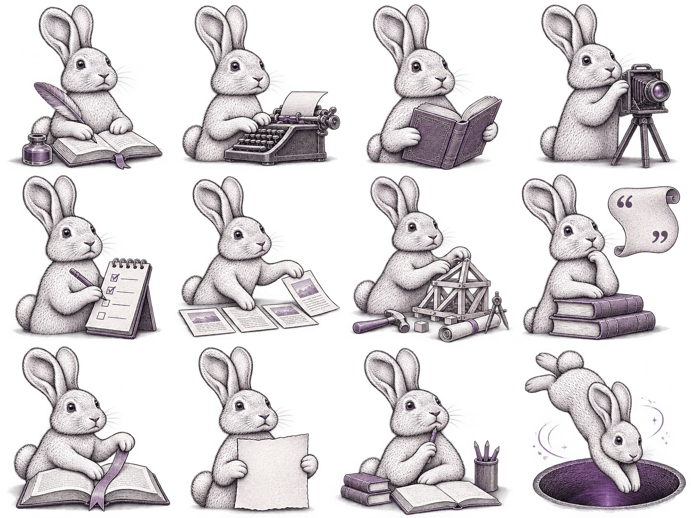
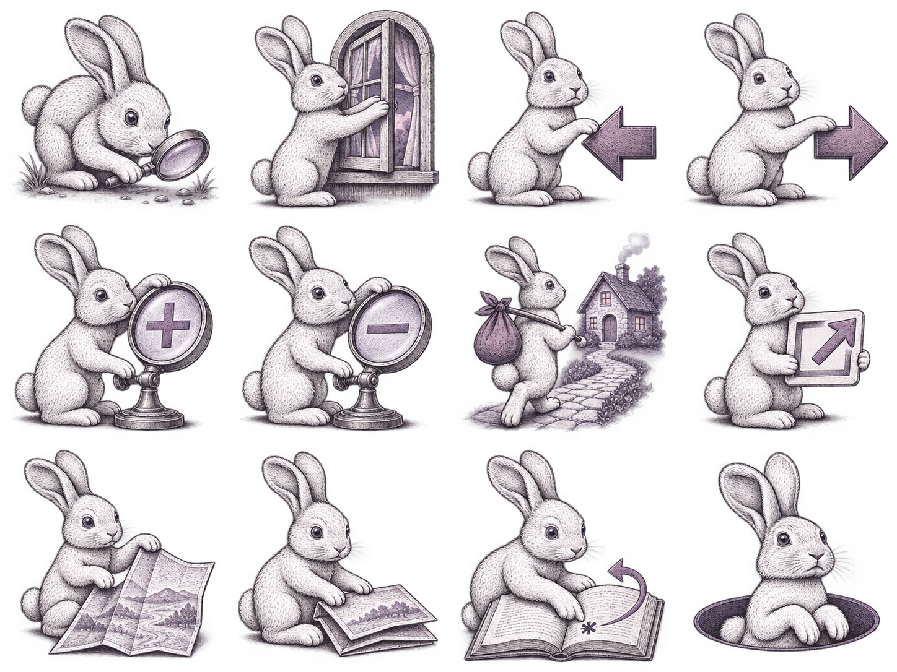
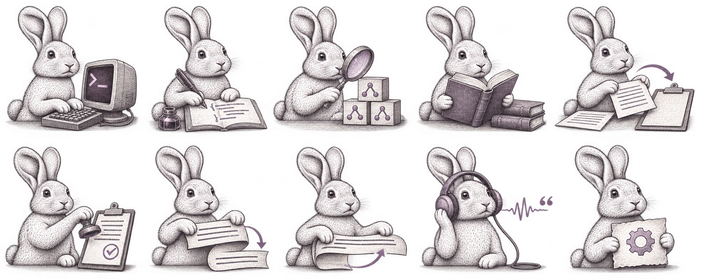
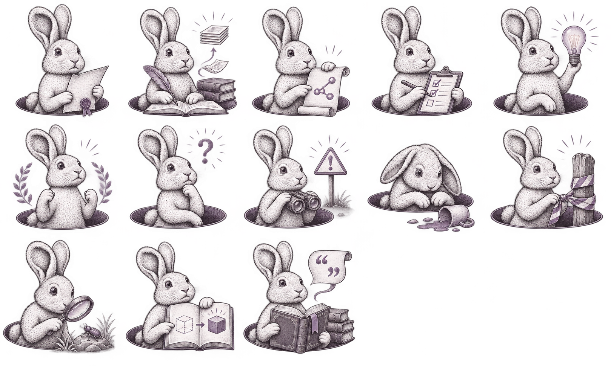
02 / Pencil and violet
A softer pencil treatment with restrained violet accents.
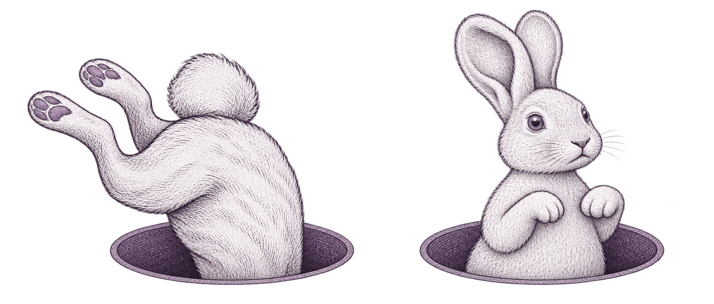
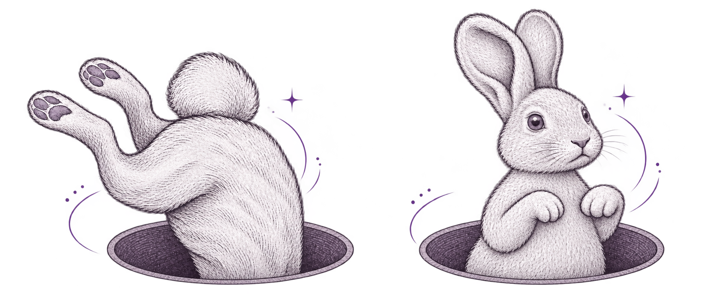
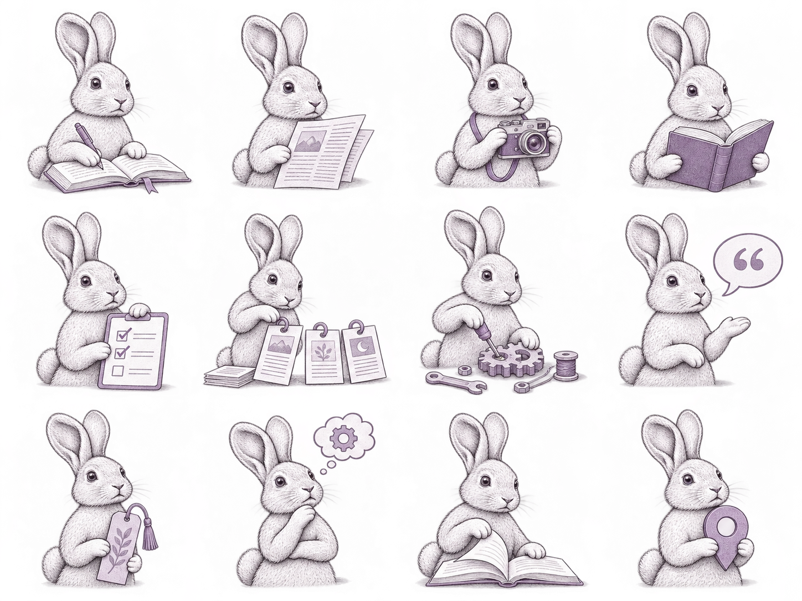
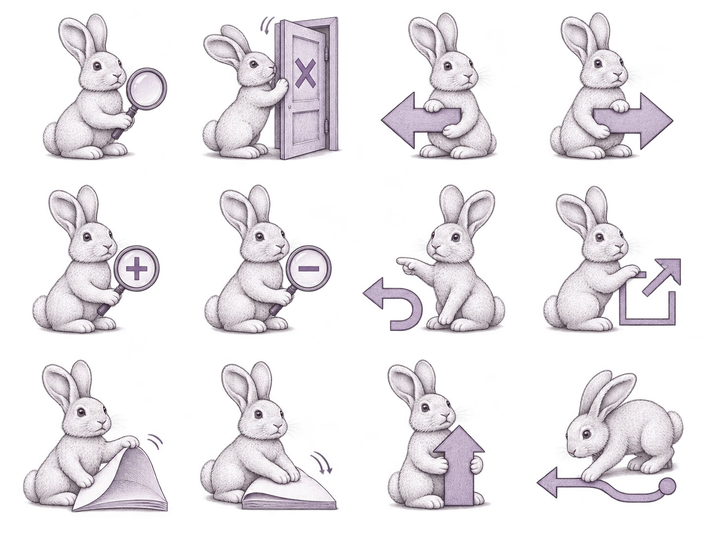
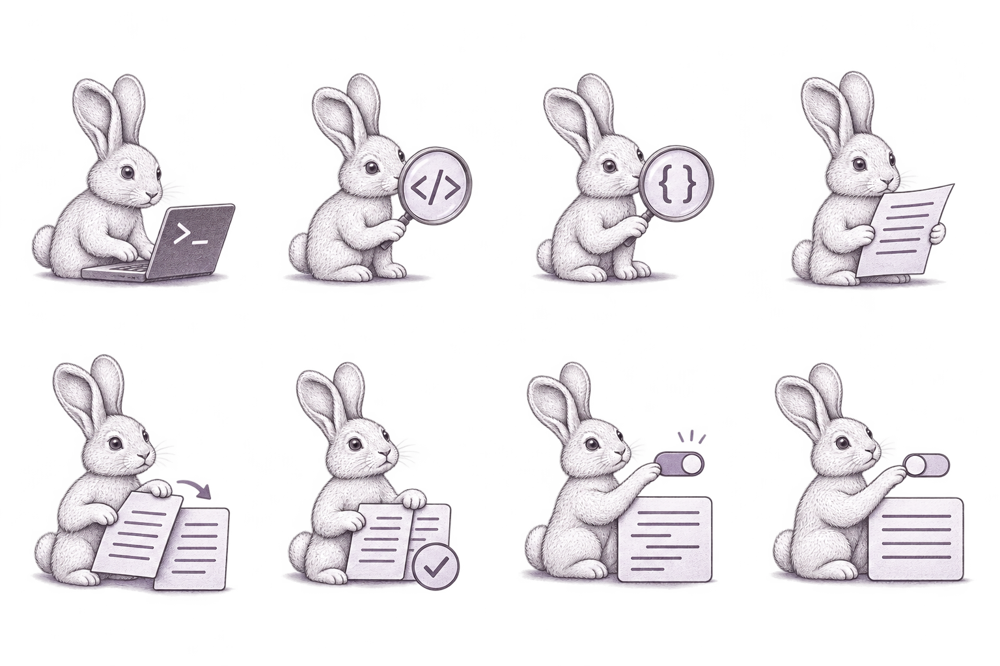
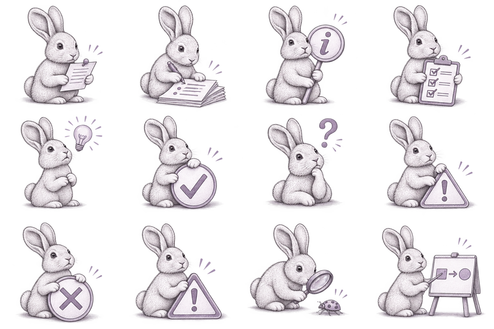
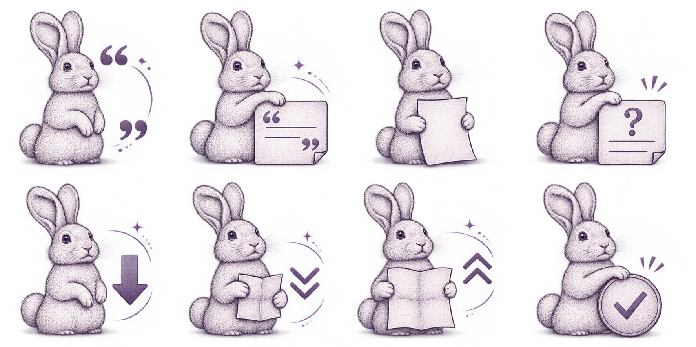
03 / Woodcut
A more emphatic engraved treatment for the same curious character.
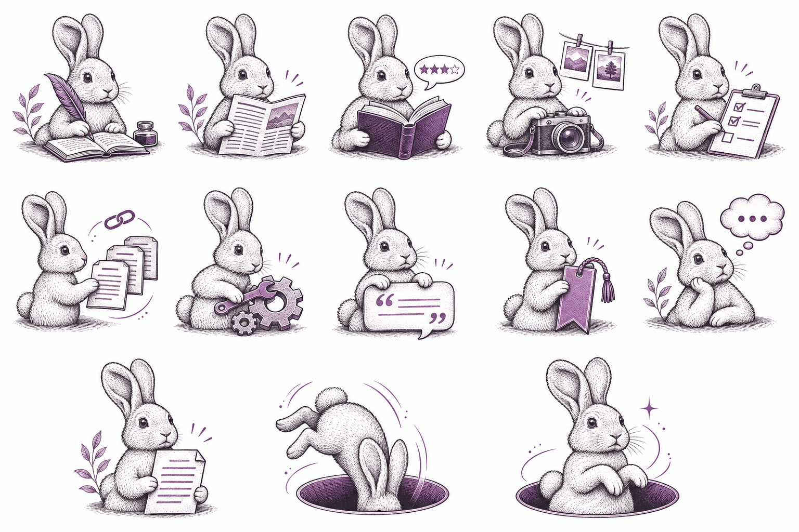
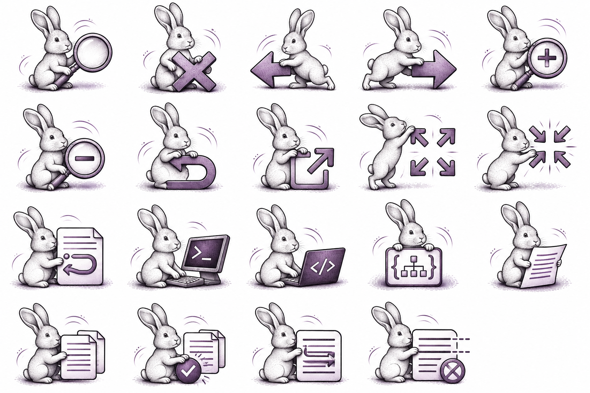
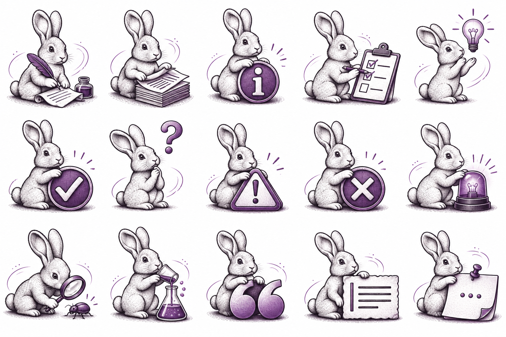
04 / Objects only
The same idea without the rabbit: the books, tools, symbols and other objects carry the identity.
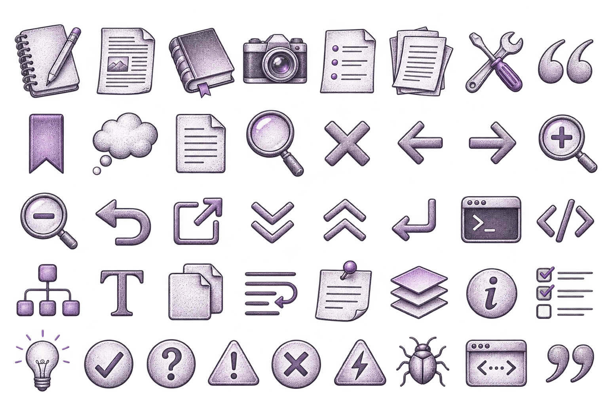